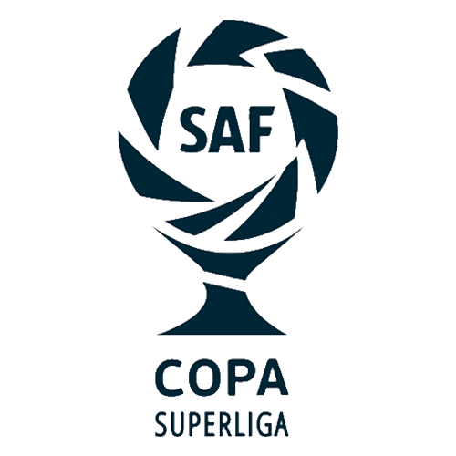
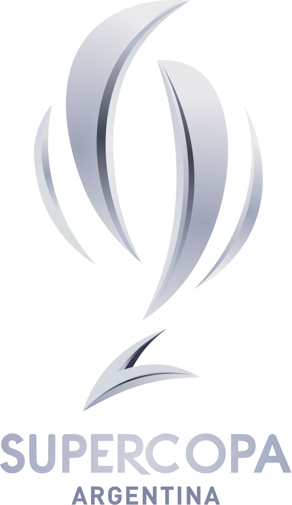
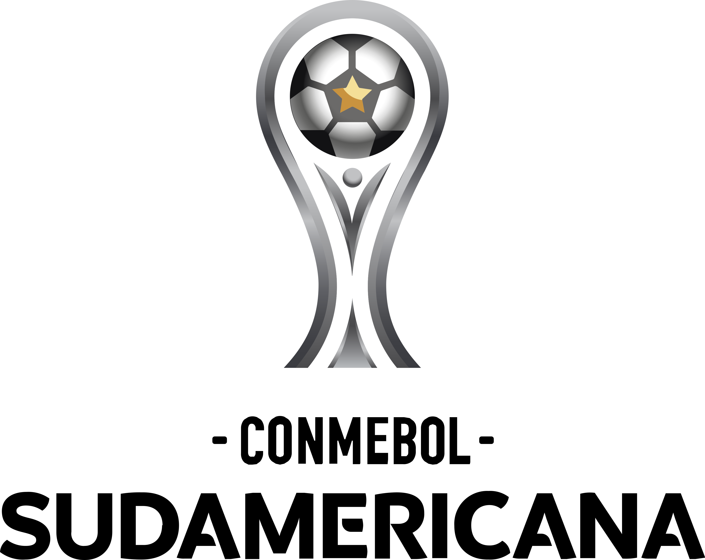
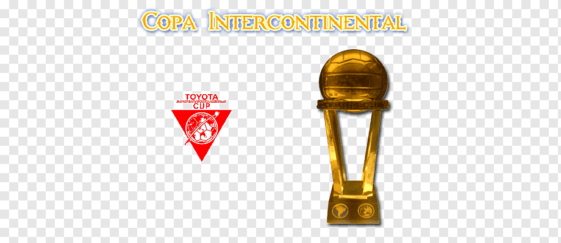

Juan Roman Riquelme:
Torneo Apertura: 1998, 2000, 2008 y 2011.
Torneo Clausura: 1999.
Copa Argentina: 2011 y 2012.
Copa Libertadores de América: 2000, 2001 y 2007.
Copa Sudamericana: 2008.
Copa Intercontinental: 2000.
COPAS NACIONALES

Boca Juniors conquistó 34 copas de la Liga Superliga Argentina.

Boca Juniors conquistó 1 copa de la Supercopa Argentina.

Boca Juniors conquistó 4 copas de la Copa Argentina.
COPAS INTERNACIONALES
Boca Juniors conquistó 6 copas de la Copa Libertadores de América.

Boca Junios conquistó 2 copas de la Copa Sudamericana.
Boca Juniors conquistó 4 copas de la Recopa Sudamericana.

Boca Juniors conquistó 3 copas de la Copa Intercontinental
LA HISTORIA LA ESCRIBIMOS NOSOTROS
Nuestros 4 idolos más ganadores
Martin Palermo:
Torneo Apertura: 1998, 2000, 2005 y 2008.
Torneo Clausura: 1999 y 2006.
Copa Libertadores de América: 2000 y 2007.
Copa Sudamericana: 2004 y 2005.
Copa Intercontinental: 2000.
Recopa Sudamericana: 2005, 2006 y 2008.

Carlos Bianchi:
Torneo Apertura: 1998, 2000 y 2003.
Torneo Clausura: 1999.
Copa Libertadores de América: 2000, 2001 y 2003.
Copa Intercontinental: 2000 y 2003.
Sebastian Battaglia:
Torneo Apertura: 2000, 2003, 2005, 2008 y 2011.
Torneo Clausura: 1999 y 2006.
Copa Libertadores de América: 2000, 2001, 2003 y 2007.
Copa Intercontinental: 2000 y 2003.
Recopa Sudamericana: 2005 y 2006.